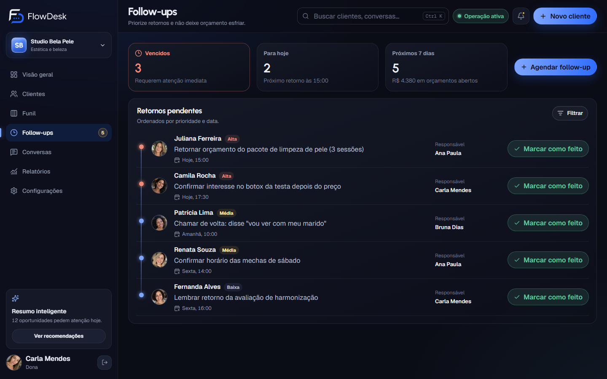
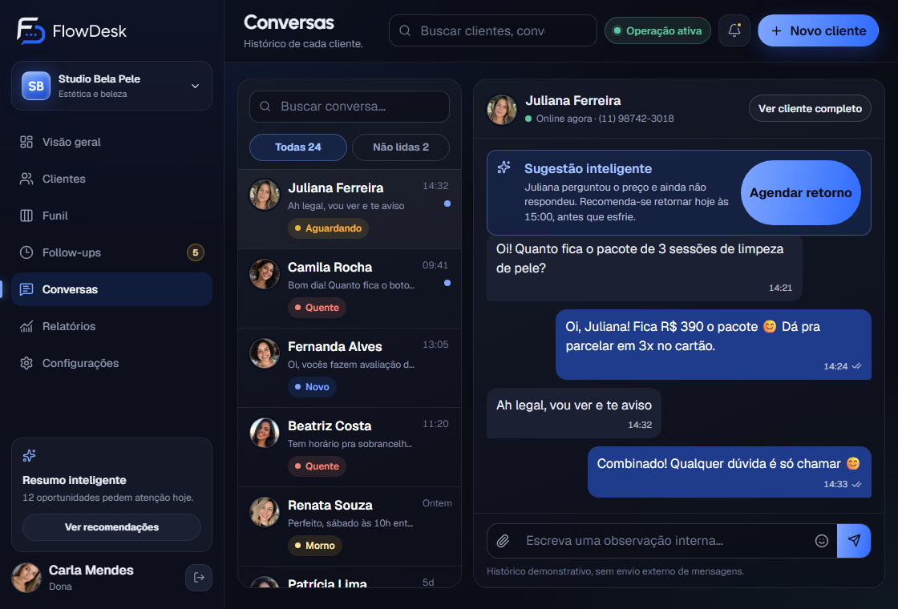
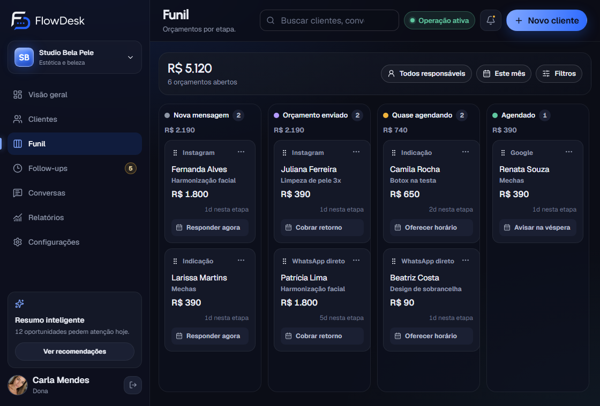
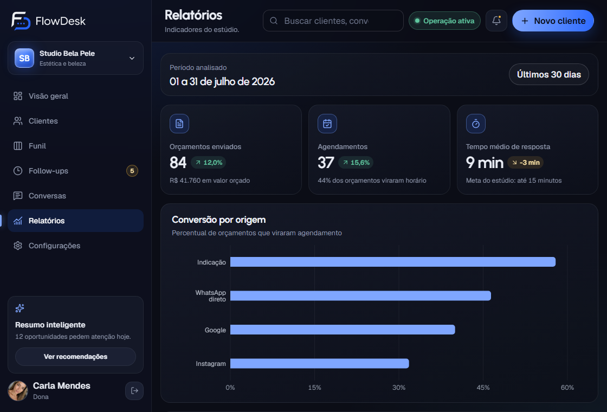

Nenhuma cliente sem resposta no seu WhatsApp.
As conversas do salão ou da clínica viram uma lista de quem chamar hoje. A equipe implanta tudo em até 24 h úteis. Você testa 3 dias por R$ 50.
Tela real do FlowDesk com dados de exemplo de um salão fictício.
A cliente pediu o preço, disse “vou ver e te aviso” e sumiu. Hoje isso depende da memória de quem está no balcão. No FlowDesk, vira uma linha na lista de quem chamar de volta hoje.
Você não configura nada.
Em quatro passos está no ar.
Você chama no WhatsApp
Uma pessoa da equipe responde em até 10 minutos, de segunda a segunda, das 9h às 18h. Você paga R$ 50 pelo teste de 3 dias, sem cartão preso.
A equipe monta o seu FlowDesk
Etapas do seu atendimento, procedimentos, quem responde o quê e as mensagens prontas. Fica pronto em até 24 horas úteis.
Seus 3 dias começam com tudo pronto
O prazo só conta depois que o acesso é liberado. As mensagens do WhatsApp já aparecem no FlowDesk, sem ninguém digitar nada.
Você decide se continua
Escolhe um plano mensal ou não continua. Nada vira cobrança sozinho, e a garantia de 15 dias devolve 100% do valor pelo WhatsApp.



O que faz o FlowDesk ser diferente
A lista de quem
chamar de volta hoje
Vencidos, para hoje e próximos 7 dias. Cada retorno com a responsável marcada e um clique para concluir. Quem pediu orçamento e ficou sem resposta aparece primeiro.
- A mensagem chega no WhatsApp e já vira uma linha aqui
- Concluir registra no histórico da cliente
- Resumo do dia para a dona, sem abrir conversa por conversa
A conversa inteira,
sem pegar o celular de ninguém
O histórico de cada cliente fica no FlowDesk: o que foi combinado, quem respondeu e quando. Status de cada conversa (quente, morna, aguardando, em risco) e sugestão de quando retornar antes de a cliente esfriar.
- “Fica R$ 390 o pacote” → “vou ver e te aviso” → retorno marcado
- Observações internas que a cliente não vê
- Mensagens prontas de preço, lembrete e resgate em um clique
Quem pediu orçamento.
Quem está quase agendando.
Cada cliente numa coluna: nova mensagem, orçamento enviado, quase agendando, agendado. Arrasta e pronto. O valor de cada orçamento aberto somado por etapa, e a origem de cada cliente: Instagram, indicação, Google.
- Próxima ação sugerida em cada cartão
- Contatos de semanas atrás separados para você insistir
- Relatórios: quantos orçamentos viraram agendamento no mês
Telas reais do FlowDesk com dados de exemplo de um salão fictício.
Tudo que já acontece no WhatsApp, organizado
Conversas com histórico
A mensagem do WhatsApp aparece sozinha, com tudo o que já foi combinado
Follow-ups do dia
Vencidos, para hoje e próximos 7 dias, com a responsável marcada
Funil por etapa
Nova mensagem / orçamento enviado / quase agendando / agendado
Mensagens prontas
Preço, lembrete de retorno e resgate de quem sumiu, feitas para estética e beleza
Recuperação de oportunidades
Contatos de semanas atrás que não fecharam, separados para insistir
Relatórios
Orçamentos enviados, agendamentos e tempo de resposta, por origem e por responsável
Para quem recebe muitos interessados pelo WhatsApp
Feito para a rotina do balcão
WhatsApp conectado
A mensagem chega no WhatsApp e já aparece no FlowDesk. Ninguém digita nada.
A equipe inteira no mesmo lugar
Mais de um número de WhatsApp, cada pessoa responsável pelas suas clientes, em todos os planos.
Implantação feita por nós
Etapas, procedimentos e mensagens prontas cadastrados pela equipe em até 24 horas úteis.
Uma pessoa responde, não um robô
Em até 10 minutos, de segunda a segunda, das 9h às 18h. Fora do horário, confirmação automática e retorno às 9h.
Imagine abrir o dia sabendo quem chamar
- Nenhum orçamento esquecido no WhatsApp.
- A recepção sabe quem responder primeiro, sem rolar conversa.
- Você vê quantos orçamentos viraram agendamento no mês.
por 3 dias de teste, com tudo configurado.
Garantia de 15 dias, sem renovação automática.
Tela real do FlowDesk com dados de exemplo de um salão fictício.
Depois do teste, o plano é
pelo volume de clientes por dia
até 40 clientes por dia
Teste de 3 dias por R$ 50 antes de qualquer plano
- “Cliente por dia” é quantas pessoas diferentes mandam mensagem num dia. Não sabe o seu número? A equipe mede com você no teste.
- Todos os planos: até 10 atendentes, mais de um número, implantação pela equipe e suporte humano.
- Garantia de 15 dias no teste e no primeiro mês. Sem renovação automática no cartão.
Perguntas de quem está decidindo
Preciso cadastrar as conversas à mão?
Não. A mensagem chega no WhatsApp e já aparece no FlowDesk, com o histórico da conversa. Ninguém digita nada.
Funciona com o WhatsApp que eu já uso e com mais de uma pessoa atendendo?
Sim. Todos os planos permitem até 10 atendentes e mais de um número. A equipe inteira trabalha no mesmo FlowDesk, cada uma vendo pelo que é responsável.
O que acontece quando acabam os 3 dias?
O teste termina e você decide se quer continuar. Se continuar, escolhe um plano mensal. Não vira cobrança sozinho e você não fica presa a contrato.
Minha recepção não tem tempo de aprender sistema novo.
Por isso quem configura é a nossa equipe, e você recebe o FlowDesk já com as suas etapas, procedimentos e mensagens prontas. Qualquer dúvida é respondida por uma pessoa no WhatsApp, de segunda a segunda.
Quanto tempo demora para começar?
Até 24 horas úteis depois do pagamento confirmado. Pagamentos de sábado e domingo começam a contar às 9h de segunda-feira.
E se eu não gostar?
Você tem 15 dias de garantia, tanto no teste de R$ 50 quanto no primeiro mês de qualquer plano. Para pedir o reembolso, basta mandar uma mensagem no WhatsApp do suporte.
É um curso ou uma consultoria?
Não. O FlowDesk é um sistema que a sua equipe usa todo dia para atender e acompanhar clientes. Você recebe acesso à plataforma, a configuração inicial e o suporte de uso.
Você não precisa de mais mensagens. Precisa saber quem chamar de volta.
Atendimento pelo WhatsApp, de segunda a segunda, 9h às 18h. Uma pessoa da equipe responde em até 10 minutos e combina com você o teste de 3 dias.